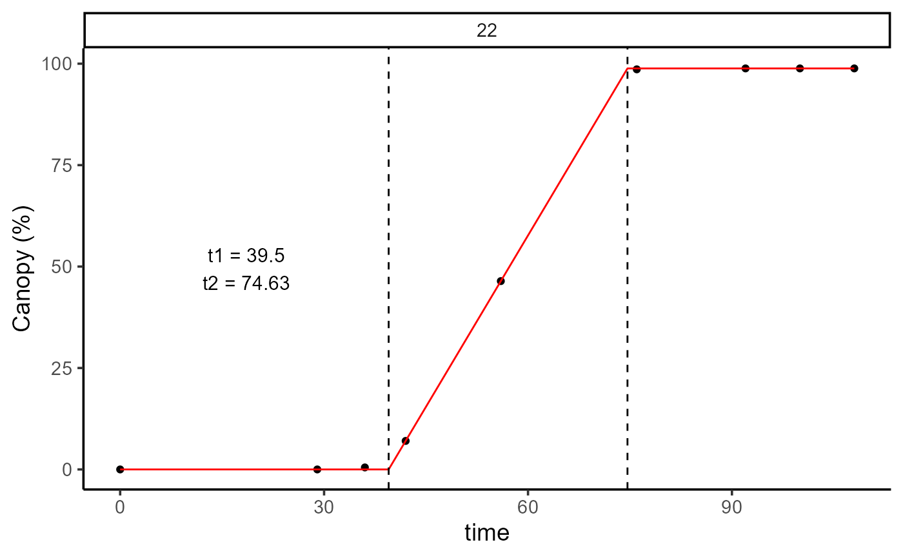
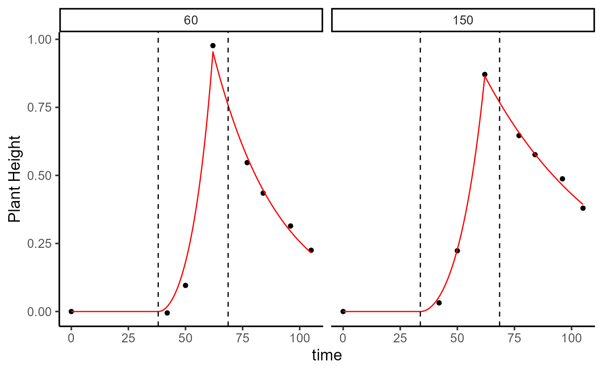
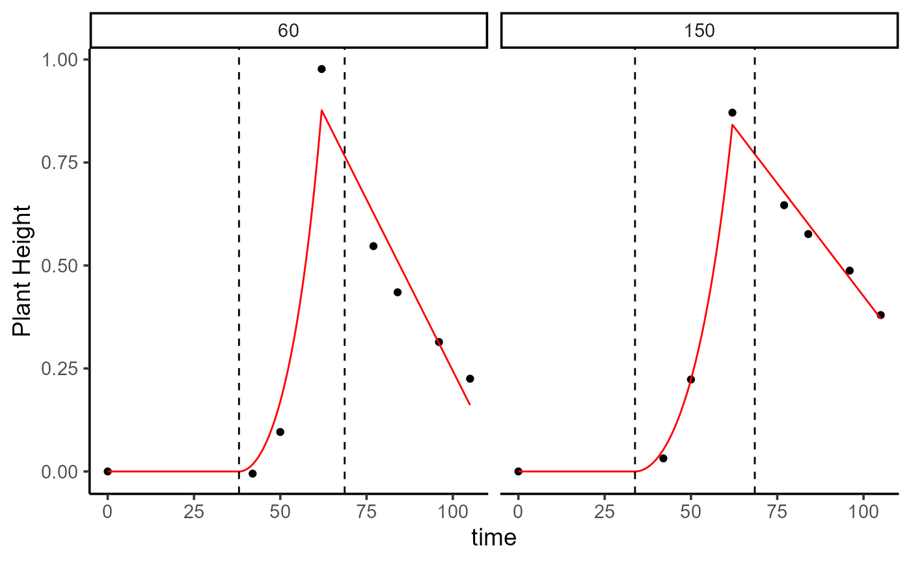

Create several plots for an object of class height_HTP
Usage
# S3 method for height_HTP
plot(x, plot_id = NULL, label_size = 4, base_size = 14, ...)Arguments
- x
An object inheriting from class
height_HTPresulting of executing the functionheight_HTP()- plot_id
To avoid too many plots in one figure. Filter by Plot Id.
- label_size
Label size. 3 by default.
- base_size
Base font size, given in pts.
- ...
Further graphical parameters. For future improvements.
Examples
library(exploreHTP)
data(dt_chips)
results <- read_HTP(
data = dt_chips,
genotype = "Gen",
time = "DAP",
plot = "Plot",
traits = c("Canopy", "PH"),
row = "Row",
range = "Range"
)
names(results)
#> [1] "summ_traits" "exp_design_resum" "locals_min_max" "dt_long"
out <- canopy_HTP(
results = results,
canopy = "Canopy",
plot_id = c(60, 150),
correct_max = TRUE,
add_zero = TRUE
)
names(out)
#> [1] "param" "dt" "fn" "max_time"
plot(out, plot_id = c(60, 150))

ph_1 <- height_HTP(
results = results,
canopy = out,
plant_height = "PH",
add_zero = TRUE,
method = c("nlminb", "anms", "mla", "pracmanm", "subplex"),
return_method = TRUE,
parameters = c(t2 = 67, alpha = 1 / 600, beta = -1 / 80),
fn_sse = sse_exp2_exp,
fn = quote(fn_exp2_exp(time, t1, t2, alpha, beta))
)
plot(x = ph_1, plot_id = c(60, 150))

ph_1$param
#> # A tibble: 2 × 11
#> plot genotype row range t2 alpha beta t1 method sse
#> <dbl> <chr> <dbl> <dbl> <dbl> <dbl> <dbl> <dbl> <chr> <dbl>
#> 1 60 W19026-15 4 5 62 0.00117 -0.0346 38.0 subplex 0.00948
#> 2 150 W19023-21 10 11 62 0.000783 -0.0183 33.8 subplex 0.00143
#> # ℹ 1 more variable: total_area <dbl>
ph_2 <- height_HTP(
results = results,
canopy = out,
plant_height = "PH",
add_zero = TRUE,
method = c("nlminb", "anms", "mla", "pracmanm", "subplex"),
return_method = TRUE,
parameters = c(t2 = 67, alpha = 1 / 600, beta = -1 / 80),
fn_sse = sse_exp2_lin,
fn = quote(fn_exp2_lin(time, t1, t2, alpha, beta))
)
plot(x = ph_2, plot_id = c(60, 150))

ph_2$param
#> # A tibble: 2 × 11
#> plot genotype row range t2 alpha beta t1 method sse
#> <dbl> <chr> <dbl> <dbl> <dbl> <dbl> <dbl> <dbl> <chr> <dbl>
#> 1 60 W19026-15 4 5 62 0.00110 -0.0166 38.0 subplex 0.0323
#> 2 150 W19023-21 10 11 62 0.000767 -0.0110 33.8 subplex 0.00329
#> # ℹ 1 more variable: total_area <dbl>